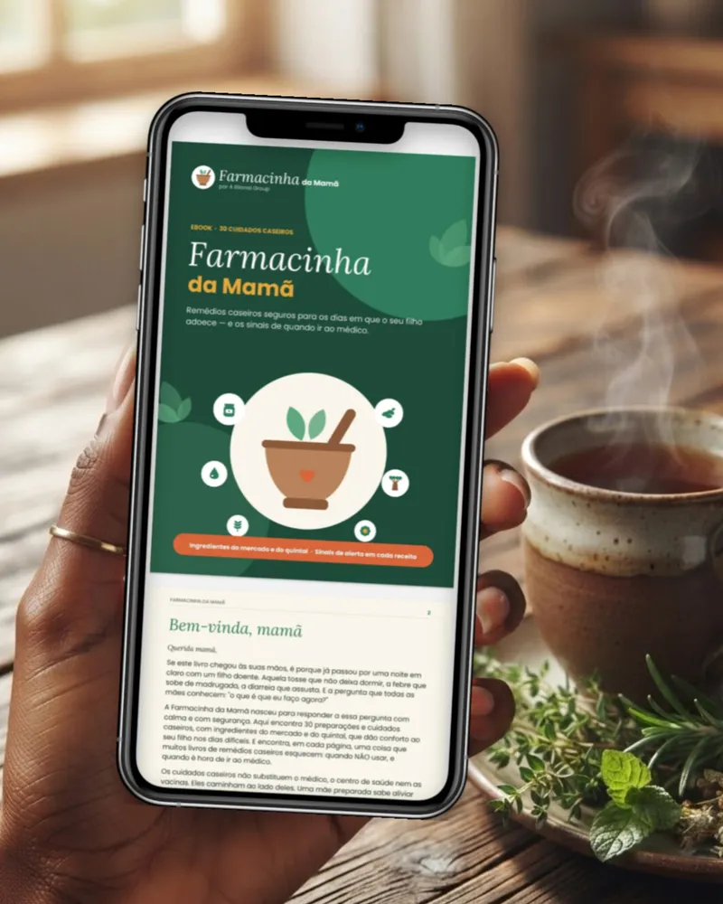

✅ Ebook: 30 cuidados caseiros
Fichas simples, uma por preparação: idade mínima, ingredientes em medidas caseiras, passo a passo, quando NÃO usar e quando ir ao médico. Em 5 capítulos: nariz e tosse, febre, barriguinha, pele e defesas do dia a dia.